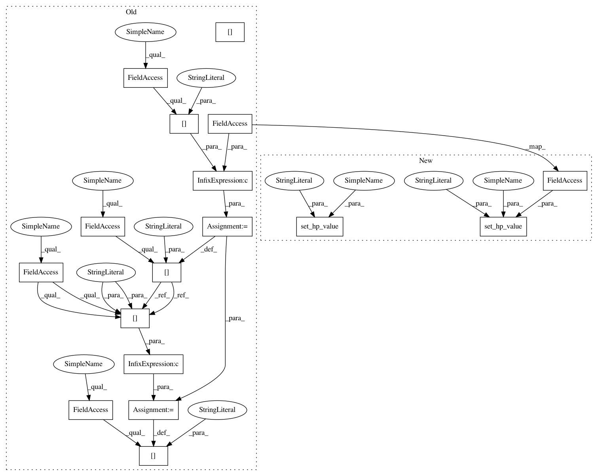

32ecda6b38cee2721195d4f5cb1da5609d2fd264,autokeras/hypermodel/block.py,XceptionBlock,build,#XceptionBlock#Any#Any#,350
Before Change
hp.Range("num_residual_blocks", 2, 8, default=4)
hp.Choice("pooling", ["avg", "flatten", "max"])
hp.values["activation"] = self.activation or hp.values["activation"]
hp.values["initial_strides"] = \
self.initial_strides or hp.values["initial_strides"]
hp.values["num_residual_blocks"] = \
self.num_residual_blocks or hp.values["num_residual_blocks"]
hp.values["pooling"] = self.pooling or hp.values["pooling"]
model = super(XceptionBlock, self).build(hp)
return model.outputs
After Change
hp.Range("num_residual_blocks", 2, 8, default=4)
hp.Choice("pooling", ["avg", "flatten", "max"])
set_hp_value(hp, "activation", self.activation)
set_hp_value(hp, "initial_strides", self.initial_strides)
set_hp_value(hp, "num_residual_blocks", self.num_residual_blocks)
set_hp_value(hp, "pooling", self.pooling)
model = super().build(hp)
return model.outputs
In pattern: SUPERPATTERN
Frequency: 3
Non-data size: 17
Instances
Project Name: keras-team/autokeras
Commit Name: 32ecda6b38cee2721195d4f5cb1da5609d2fd264
Time: 2019-07-26
Author: jhfjhfj1@gmail.com
File Name: autokeras/hypermodel/block.py
Class Name: XceptionBlock
Method Name: build
Project Name: jhfjhfj1/autokeras
Commit Name: 32ecda6b38cee2721195d4f5cb1da5609d2fd264
Time: 2019-07-26
Author: jhfjhfj1@gmail.com
File Name: autokeras/hypermodel/block.py
Class Name: ResNetBlock
Method Name: build